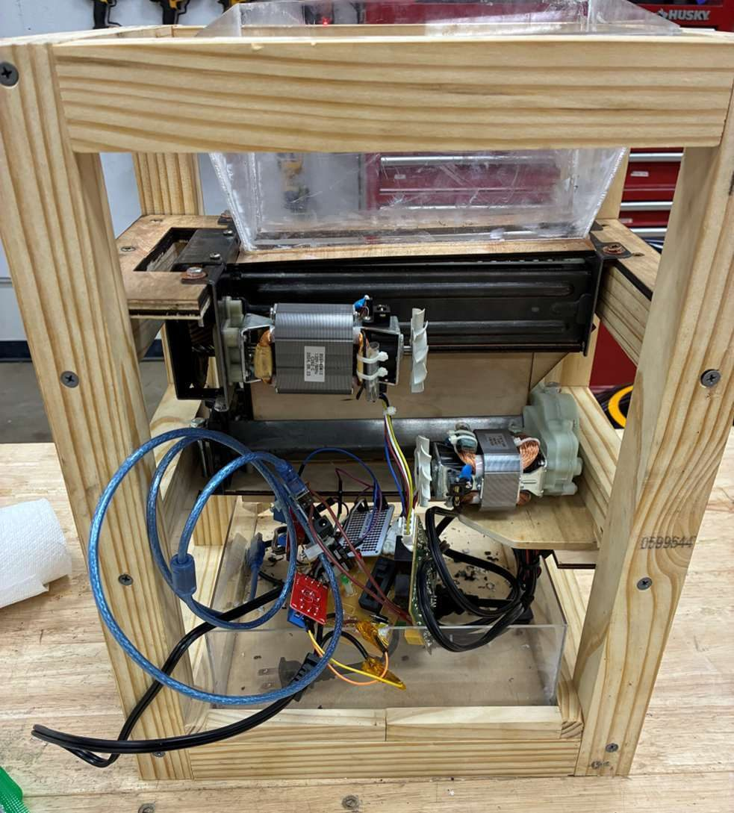

Mechanical Engineering · Texas A&M University
I design, build, and optimize real machines.
From CNC toolpaths and FEA-validated sensor assemblies to a filament-recycling startup and record-setting GPU-accelerated CFD — I take engineering problems from CAD model to working hardware.
About
Thanks for checking out my portfolio! Whether you're a recruiter, a fellow engineer, or just poking around — welcome. Here's the short version:
I'm a mechanical engineering student at Texas A&M University (B.S. Mechanical Engineering & Mathematics, May 2027), currently interning at Rochester Sensors, an Amphenol subsidiary, where I optimize CNC machining workflows and run FEA and environmental qualification testing on sensor assemblies.
Outside of class and work I co-founded ECOFIL, a startup building a multi-stage 3D-printer filament recycling system, and I've shipped everything from 14-foot illuminated metal sculptures installed in an Austin creek to CUDA fluid-dynamics kernels profiled down to the warp level. I'm happiest when a project spans the whole stack: CAD → simulation → fabrication → testing.
I'm actively seeking mechanical engineering internship and full-time opportunities — if my work looks useful to your team, let's talk.
Featured Work
Three favorites — click any of them for the full story and photos.

ECOFIL — Filament Recycling System
2025 – PresentCo-founder & Mechanical Engineer · Startup
A three-stage machine line — shredder, dehydrator, extruder — that turns plastic waste into 3D-printer filament. Incubator-funded, designed in SolidWorks, built in-house.
Read the full story →
Giant Metal Dragonflies
2022 – 2023ME Intern · Waterloo Greenway Conservancy
Four illuminated dragonfly sculptures with 14-ft+ wingspans installed over Waller Creek for Austin's Creek Show — designed in SolidWorks, laser-cut, and welded with 200+ joints.
Read the full story →GPU-Accelerated CFD Optimization
Summer 2025ME Intern · Petrobras, Brazil
Kernel-level optimization of a CUDA lattice-Boltzmann CFD solver: 400%+ throughput gains, 60% better warp efficiency, and a 33% higher peak Reynolds number.
Read the full story →Let's build something.
I'm seeking mechanical engineering internship and full-time roles. The fastest way to reach me is email.